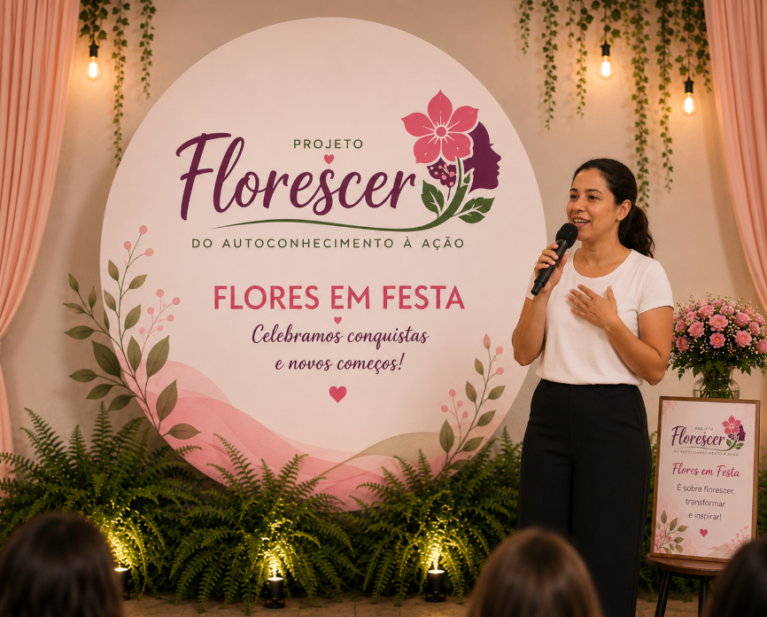
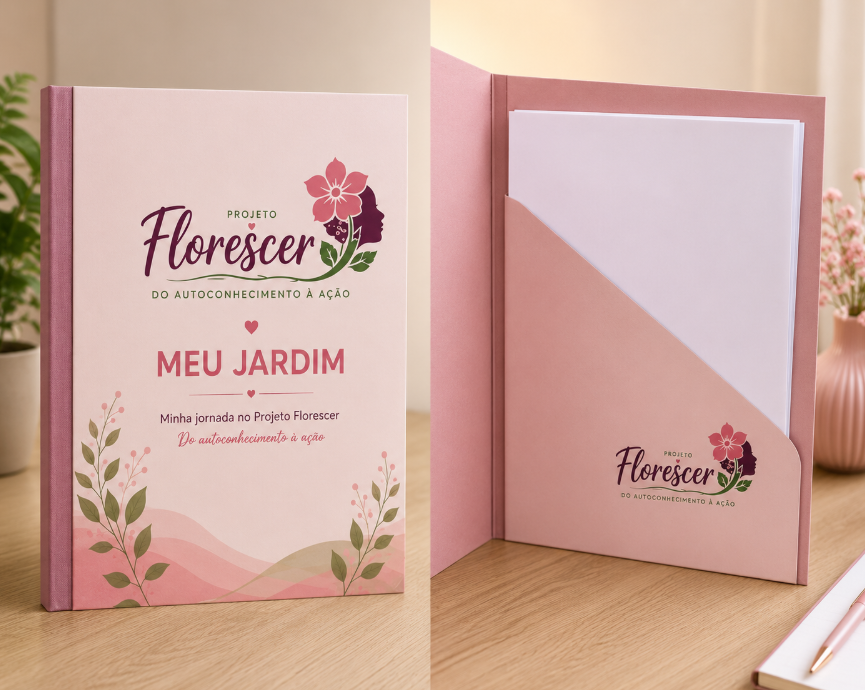
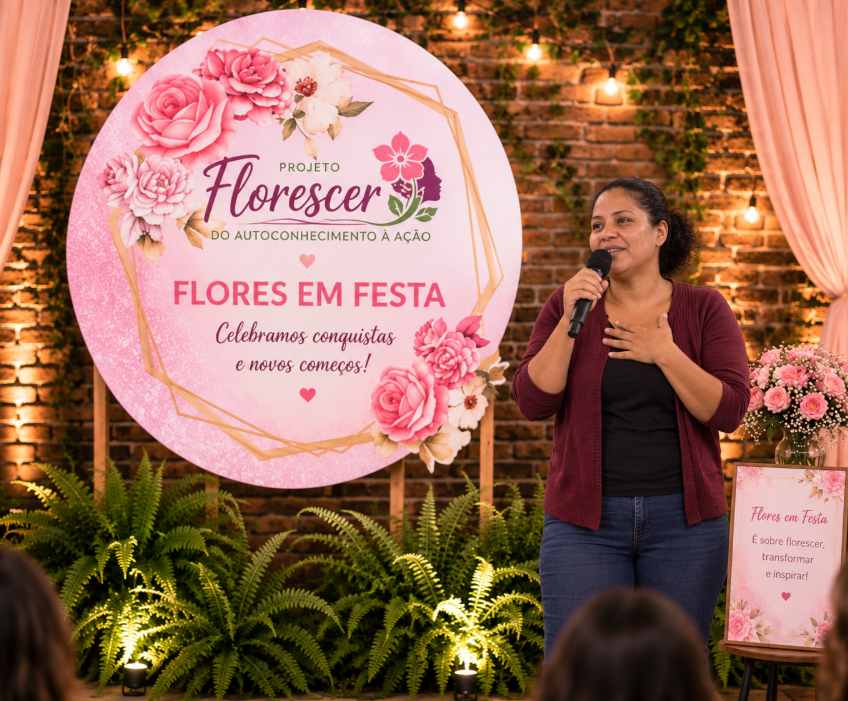
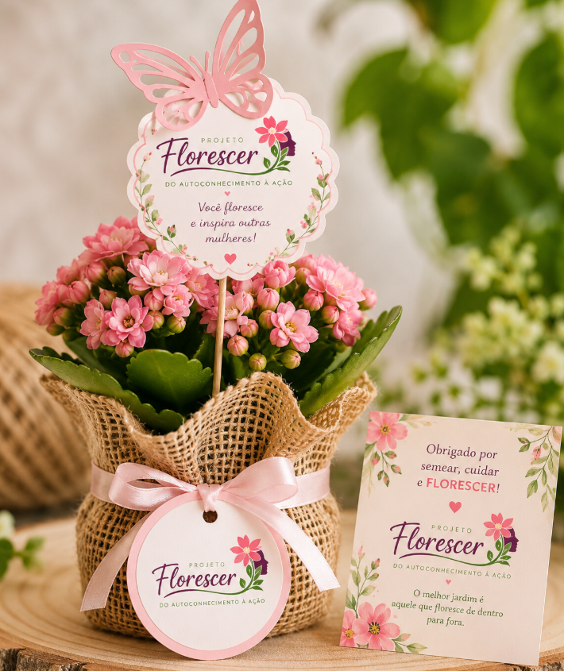

O Florescer é um percurso de desenvolvimento para mulheres que desejam reconhecer suas capacidades, descobrir novas possibilidades e transformar objetivos em ações concretas. São 6 encontros presenciais, com atividades complementares pelo WhatsApp, unindo autoconhecimento, escolhas, planejamento e ação.

Cada encontro responde a uma pergunta central e conduz a participante a reconhecer capacidades, fazer escolhas, planejar, agir e continuar.
Quem sou eu e quais forças existem em mim?
Onde estou e o que precisa de cuidado?
O que quero transformar primeiro?
O que vou fazer para alcançar meu objetivo?
Quem pode me ajudar e quais oportunidades posso acessar?
O que conquistei e qual será meu próximo passo?

Pastas, caderno, materiais, certificado e lembranças ajudam a criar pertencimento e tornam cada etapa do percurso visível e especial.
Experiências de conquista e reconhecimento das próprias capacidades fortalecem a confiança para agir.
Planos "se → então" ajudam a antecipar obstáculos e transformar intenção em comportamento.
Objetivo, obstáculo e plano ajudam a transformar desejos em ações possíveis e realistas.
A participante aprende fazendo: age, observa, avalia, ajusta e tenta novamente.
O encerramento reconhece o percurso realizado, valoriza conquistas e reforça a continuidade dos próximos passos.


Reconhecimento, memória e continuidade
Cada encontro, material e celebração do Florescer só acontece com apoio. Ao patrocinar uma turma, você sustenta um percurso real de autoconhecimento, planejamento e ação profissional para mulheres que estão prontas para florescer.
Quero apoiar o Florescer